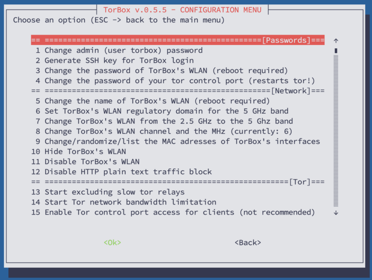
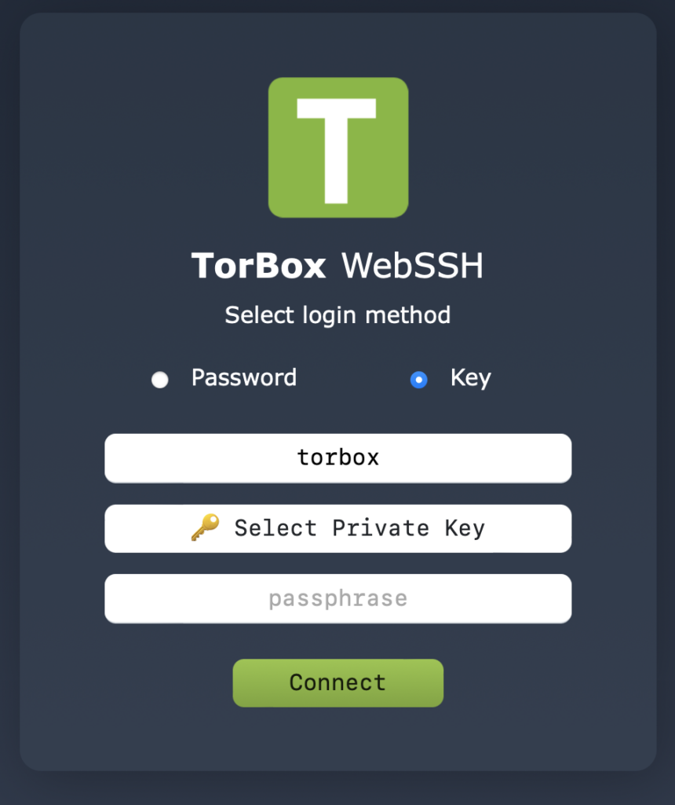
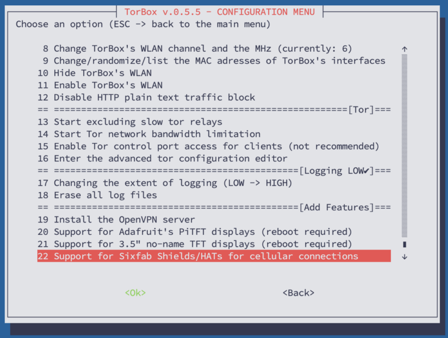
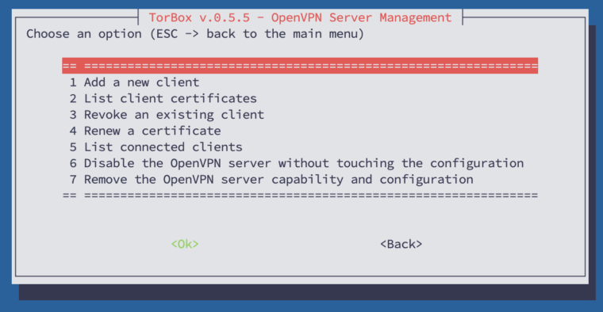

The primary purpose of the configuration sub-menu is to offer a simple way to configure your TorBox. In this sub-menu, you also find all the necessary entries to change the default passwords. You should do that as soon as possible — check the red colored menu entries below. Additionally, this menu gives you the ability to change basic configurations like network, security, tor, and logging settings and install additional software for specific hardware support.
In the following, we look at all menu entries one by one:
- Menu entry 1: Change admin (user torbox) password: That’s the first thing you should do!

- Menu entry 2: Generate SSH key for TorBox login: This menu entry will generate new private and public SSH keys, providing an easy, secure way to log into TorBox. In the end, you will have two files in TorBox’s home directory:
- id_rsa (Private Key): The private key must be downloaded to your client via SFTP (using the same login and password as your SSH client). To log into TorBox, you must use an SSH client that supports SSH key handling (for example, Termius) or TorBox’s webssh. Keep the key secure so that no other users on your computer can read the file.
- id_rsa.pub (Public Key). The public key will stay on the TorBox.
- This menu entry doesn’t disable password identification. However, you will find the corresponding menu entry in the Danger Zone.
- Already existing SSH keys will be overwritten. If disabled, you can temporarily enable password identification to avoid being locked out. When replacing the public SSH key, you must also replace and test the private key on your SSH client before logging out of the TorBox!
- Regardless of whether SSH keys are used, the default passwords for entries 1 and 3 should be changed.
- Menu entry 3: Change the password of TorBox’s WLAN: That’s the second thing you should do! A reboot is required to take effect.
Important: Only letters (upper and lower case) and numbers are allowed. The length must be between 8 and 63 characters.
- Menu entry 4: Change the password of your Tor control port: The control port is used for controlling Tor, usually through other software. Changing that password is generally unnecessary. If you, nevertheless, change the password, Tor restarts automatically.
- Menu entry 5: Change the name of TorBox’s WLAN. Depending on your environment, it may be advisable to match the name of your wireless network.
- Menu entry 6: Set TorBox’s WLAN regulatory domain for the 5 GHz band: By default, TorBox’s WLAN regulatory domain is set to the United States, which works in most cases. Depending on the location, however, it may be necessary to adjust the WLAN regulatory domain to use all bands, channels, and frequencies without violating regulations. For more information, see here.
- Menu entry 7: Change TorBox’s WLAN from the xx GHz to the xx GHz band: This menu entry changes the TorBox’s WLAN — the one, which the SSH client connects — from 2,5 GHz to 5 GHz or back. If you are in an area with many devices transmitting on 2.5 GHz, a change on the 5 GHz band could solve some problems and provide higher throughput. This is only supported by a Raspberry Pi 3 Model B+ or a Raspberry Pi 4 Model B.
- Menu entry 8: Change TorBox’s WLAN channel and the MHz: This menu entry changes the channel and the frequency of TorBox’s WLAN. If you are in an area with many devices sharing the same channel as TorBox’s WLAN, changing channels can help resolve issues and improve throughput. It is also true that higher frequencies are associated with higher throughput. However, this also means that more power is required and thus a reliable power supply. Frequencies above 20 MHz are only supported by a Raspberry Pi 3 Model B+, a Raspberry Pi 4 Model B or a Raspberry Pi 5.
Important: 40 MHz is only activated if there is no overlap with other devices. For this purpose, hostapd performs a background scan. This can also be checked with the following command:hostapd -dd /etc/hostapd/hostapd.conf
- Menu entry 9: Change/randomize/list the MAC addresses of TorBox’s interfaces: A MAC address is a unique identifier assigned to a network interface. According to Edward Snowden, the NSA uses a system to track the movements of mobile devices in a city by monitoring MAC addresses. Therefore, vendors began randomising the MAC addresses on their devices. Since TorBox v0.5.1, we have randomised the MAC addresses of the interfaces wlan0, wlan1, eth0, and eth1 by default. However, to overcome captive portals, you can also use the MAC address of another device that has successfully passed through a captive Portal. See here for more information on how to pass through a captive portal.
- Menu entry 10: Hide / Unhide TorBox’s WLAN: If you choose “hide”, TorBox sends an empty SSID in beacons and ignores probe request frames that do not specify a full SSID. In other words, to connect with your wireless network, the full name of that network must be known. “Unhide” will reverse this behaviour.
- Menu entry 11: Disable / Enable TorBox’s WLAN: If at least one client device is connected to the TorBox with a cable, through a VPN connection or an
usb0interface, this menu entry gives the possibility to disable the TorBox WLAN. It can be set to a temporary disabling that lasts only until the next TorBox restart, or to a permanent disabling. Disabling TorBox’s WLAN permanently carries the risk of locking you out.
- Menu entry 12: Enable / Disable HTTP plain text traffic block: This option blocks (by default) all HTTP plain text traffic through Tor by blocking port 80. It should avoid unencrypted data traffic at Tor exit nodes, which could break your anonymity (see here). However, it is only a very superficial block, which could help if, for example, a browser requests an unencrypted Webpage (http://). Currently, it does not block plain-text traffic (e.g., Telnet). Also, HTTP plain-text traffic from clients using TorBox’s SOCKS 5, in a VPN over Tor or a Tor over Tor scenario, cannot be blocked. Another downside is that not only unencrypted web traffic but also other traffic on port 80 is blocked, so some applications may no longer work correctly. However, .onion addresses using “http://” will still work.
- Menu entry 13: Start/Stop excluding slow tor relays: This menu entry generates a list of Tor relays that are slower than the specified speed threshold (KB/s). You can set the threshold, but if you’re unsure, we default to 4000 KB/s, which currently blocks fewer than half of the relays. Excluding slow tor relays may give you a higher and more stable average speed and, therefore, a better user experience. This measure is thus useful if you notice slow or unstable Internet performance. However, this comes with a price –> a higher risk of deanonymization due to a smaller set of relays. To illustrate possible concerns, take the example of a hypothetical adversary, which adds a lot of excellent performing relays to the tor network to anonymize tor users. In this case, it is more likely that you are using the adversary’s relays, which could deanonymize users via a correlation attack. For that reason: Do not activate this menu entry if your anonymity has the highest priority.
Important: If activated, please don’t forget to update the list of excluded slow tor from time to time, using entry 12 in the update and maintenance sub-menu.
- Menu entry 14: Start/Stop bandwidth limitation: With this setting, you can configure a maximum bandwidth limit. For example, you might want to choose “BandwidthRate 10 MBytes” for 10 megabytes per second (a fast connection), or “BandwidthRate 500 KBytes” for 500 kilobytes per second (a decent cable connection). The following unit specifications are supported: N bytes|KB|MB|GB. The minimum BandwidthRate setting is 75 kilobytes per second.
Important: The default bandwidth communicating with the Tor network is set to 1 GB (GByte per second). We do not recommend changing the default setting.
- Menu entry 15: Enable / Disable Tor control port access for clients: For security reasons, the Tor control port is only used locally on the TorBox itself and is protected by a password. If someone needs to control Tor from a client, they can enable the Tor control port access for clients.
Important
– To take effect of the change, you must (re-)select the Internet connection in the Main Menu (entry 5-10).
– If the Tor control port is enabled for clients, we strongly advise changing the password of your Tor control port (entry 3).
– Enabled Tor control port access for clients generates warning messages in the Tor log.

- Menu entry 16: Enter the advanced tor configuration editor: This menu entry gives access to the Tor configuration file. You should know what you are doing before you modify the configuration file—otherwise, you could break your TorBox. If you are unsure, then contact us. Did you do something wrong? You can always overwrite this configuration with the default one, stored in ~/torbox/etc/tor/. After changing the configuration, use CTRL-S in the editor to save the changes. CTRL-X to exit the editor.
- Menu entry 17: Changing the extent of logging: By default, TorBox reduces logging to a minimum. However, the Tor protocol function remains enabled to verify correct operation. Tor ensures that no sensitive information is logged. For detailed troubleshooting, set the log level to “High” to allow the operating system’s default logging.
- Menu entry 18: Erase all log files: It does what it says.
- Menu entry 19: Install the OpenVPN server / Manage the OpenVPN server: Installing an OpenVPN server makes sense in a TorBox on a Cloud installation, or in any case, if TorBox should act as an OpenVPN server. If TorBox does not appear to be installed in the cloud, the installer will ask you to verify whether the installation is on a cloud or on a physical (“real”) box, meaning it is running on actual hardware. The difference is that with the first option, TorBox assumes the Internet is connected to a fixed interface named
eth0, which is the only interface that can be chosen as an Internet Interface. With the latter, you can use all interfaces and connect the client via OpenVPN.
The installation is straightforward; all default options are pre-selected, and you usually only need to pressEnter.
During the setup, you will be asked for the IP address on which the OpenVPN server should listen: - On a cloud installation: The installer detects the local IP address automatically. If the server is behind NAT, you will also be asked for the public IP address or hostname that clients can use to reach the server from the Internet. Make sure this address is accessible from outside — either directly or via your provider’s NAT/port forwarding.
- On a real box: Use the IP address through which your client reaches the TorBox: 192.168.42.1 for WiFi clients or 192.168.43.1 for cable clients. However, the OpenVPN server listens on all network interfaces, so either address should work.
The installer also supports both IPv4 and IPv6. By default, IPv4 is recommended. IPv6 support is available as a beta option. Clients can be configured for IPv4 only, IPv6 only, or dual-stack (IPv4 + IPv6). When IPv6 is not enabled for clients, it is automatically blocked to prevent IPv6 leaks.
Additionally, you can choose whether a single .ovpn profile may be used on multiple devices simultaneously. By default, each client needs its own separate .ovpn file. Enabling multi-device support disables persistent IP addresses for clients.
Regarding the port, we highly recommend using the standard port 1194 for OpenVPN. To handle VPN connections, TorBox must accept traffic on this specific port and must not route it through the Tor network. It means that using another port, for example, 443, to bypass a firewall block will prevent data packets sent to that port from being routed through the Tor network, which would be a substantial security risk. For example, UDP on port 443 is most commonly associated with the QUIC protocol, developed by Google and now used by several major web services and applications to provide faster, more efficient encrypted web connections . Before using a port other than 1194, you must check if UDP traffic to this port is not being used by another application, which could then compromise your security.
For encryption settings, secure defaults are pre-selected (AES-128-GCM, ECDSA with prime256v1, tls-crypt-v2, TLS 1.2 minimum). Advanced users can customise the data channel cipher (AES-128/192/256-GCM, AES-128/192/256-CBC, or ChaCha20-Poly1305), the certificate type (ECDSA or RSA), the control channel cipher, the minimum TLS version (1.2 or 1.3), TLS 1.3 cipher suites, TLS key exchange groups, the HMAC digest algorithm, and the control channel protection mechanism (tls-crypt-v2, tls-crypt, or tls-auth).
If the OpenVPN server is installed, the menu entry will allow you to manage the OpenVPN server, displaying a sub-menu (see below):
- Add a new client: Every client needs an
ovpnfile generated on the TorBox. You can add a client using this menu entry, which creates a new ovpn file in/home/torbox. After the generation, you must download theovpnfile to your client machine. You can access it by using an SFTP client (it uses the same login and password as your SSH client). Then use the ovpn file with OpenVPN Connect. With a macOS client, we recommend Tunnelblick because of its security features. - List client certificates: Displays all client certificates with their status (valid/revoked), expiry date, and remaining days.
- Revoke an existing client: Revokes a client’s certificate, removes its .ovpn file, and disconnects the client if currently connected.
- Renew a certificate: Opens a sub-menu to renew either a client certificate or the server certificate. Renewal keeps the same private key and generates a new .ovpn file for the client. You can specify a custom validity period.
- List connected clients: Shows currently connected clients with their real IP address, VPN IP address, connection time, and data transfer statistics.
- Enable/Disable the OpenVPN server: Allows you to temporarily disable the OpenVPN server (until the next reboot) or permanently disable it (until re-enabled). If the server is disabled, this entry lets you re-enable it.
- Remove the OpenVPN server capability and configuration: Completely removes the OpenVPN server, all certificates, client configurations, and related system settings.
Important: To activate the OpenVPN Server, you have to select the Internet source in the Main Menu (entry 5-10) again!


- Menu entry 20: Support for Adafruit’s PiTFT displays: A nice way to display TorBox’s real-time statistics (main menu entry 1) is to combine a Raspberry Pi with a PiTFT 3.5″ resistive touch 320×480 from Adafruit (for more information, see here). With this menu entry, the necessary drivers are installed. TorBox must be connected to the internet, and a reboot is required for the change to take effect. Supported are the following Adafruit’s PiTFT displays: PiTFT 3.5″ resistive touch 320×480, PiTFT 2.8“ capacitive touch 240×320, PiTFT 2.4″, 2.8″ or 3.2″ resistive 240×320, PiTFT 2.2″ no touch 240×320, Braincraft 1.54″ display 240×240.
- Menu entry 21: Support for 3,5″ no-name TFT displays: Instead of an Adafruit TFT display, it is also possible to use a 3,5″ no-name TFT (for more information, see here). With this menu entry, the necessary drivers are installed. TorBox must be connected to the internet, and a reboot is required for it to take effect.
Regarding the use of TFT displays
TorBox’s menus and dialogue boxes have been adapted only for TFTs with a minimum resolution of 320×480. Adafruit’s and 3,5″ no-name TFTs are widely used and are therefore included in the configuration menu. On request, we can support additional common small screens for the Raspberry Pi.
- Menu entry 22: Support for Sixfab Shields/HATs for cellular connectivity: This menu entry installs the required drivers for Sixfab Cellular Shields/HATs (for more information, see here). Supported are the following Sixfab Shields/HATs: Raspberry Pi GSM/GPRS Shield, Raspberry Pi 3G-4G/LTE Base Shield V2, Raspberry Pi 3G/4G<E Base HAT, Raspberry Pi Cellular IoT Application Shield, Raspberry Pi Cellular IoT HAT, Raspberry Pi Tracker HAT.
• • •
Problems and questions
- Can I hide the name of the wireless network (SSID) of my TorBox? –> see here.
- I’m connected to TorBox, and all is working as expected, but Firefox, Safari and any iOS device don’t display .onion sites. What’s wrong? –> see here.
- Is there a way to force/block TorBox to use an exit node in a specific country? –> see here.
- Should I change the default passwords? How can I change my passwords? –> see here.
- Should I change the name of the wireless network (SSID) of my TorBox? How can I change it? –> see here.
- TorBox’s wireless manager doesn’t show me any or not all wireless networks (2,5 GHz and/or 5 GHz)! What can I do? –> see here.
- Why is Tor so slow – is the Tor network broken? –> see here.